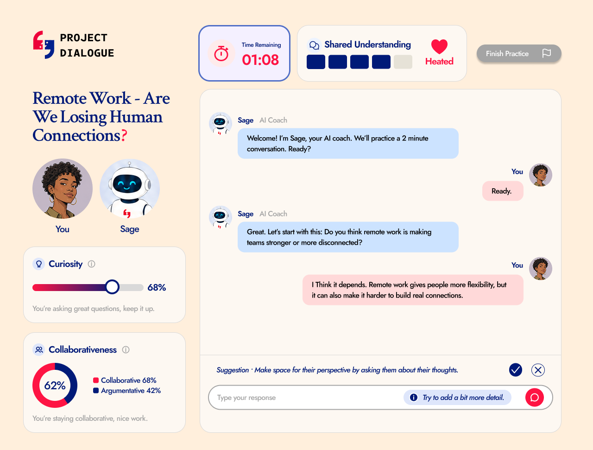
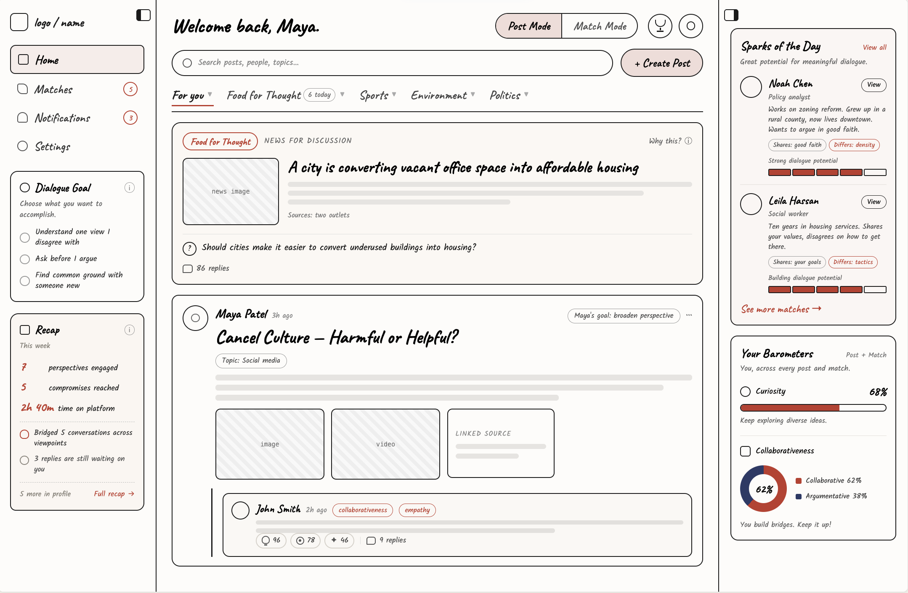
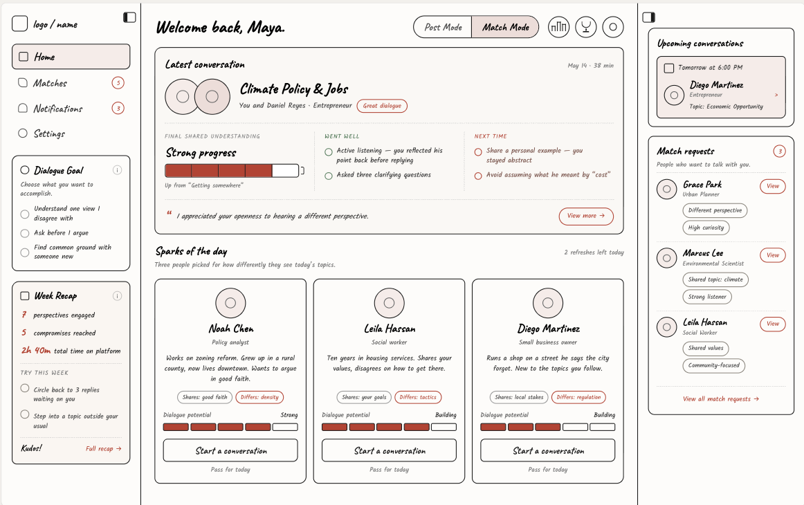

Common Strengths
- Strong content discovery
- Personalized recommendations
- Low-friction matching
- Interest-based communities
- High engagement

AI-Enabled Civic Tech Platform
Problem
Social platforms optimize for engagement over understanding, so users needed to trust a fundamentally different interaction model built around constructive disagreement.
Founder
1 UI/UX Designer
3 Engineers
UI/UX Designer
Feb 2026 – Current
Pre-Launch
Key Outcome
I replaced an explanation-heavy onboarding with a single AI practice conversation that teaches constructive dialogue through use rather than instruction.
Result: ~50% fewer onboarding steps, with users reaching the platform's core value faster.
What I Drove
Project Dialogue is an emerging civic-tech platform rethinking how digital systems shape connection in an age of polarization. As UI/UX Designer, I turned that mission into MVP user flows, an AI practice conversation, and a visual identity for a new kind of digital public space.
You are now viewing:
01 Solution
A platform built around understanding, not engagement.

Bold and unforgettable, but also timeless and chic. Every typographic and color decision was made to preserve that balance.
02 Research


I analyzed social media and match-making apps to find gaps in how platforms support cross-perspective connection.
of Facebook content comes from like-minded sources
of U.S. adults have personally experienced online harassment
say political discussions online are less respectful than in-person
Key Research Finding
The competitive analysis showed the deeper problem wasn't content moderation, it was interaction design: existing platforms reward attention, reaction, and similarity more than thoughtful exchange.
03 Ideation
Before entering the platform, users had to understand a completely new model for constructive disagreement, and the original onboarding took five separate steps to get there. I felt that was too long, so I replaced it with a single AI practice conversation.
How might we introduce users to a completely new conversation platform and its unique interaction model without overwhelming them with lengthy explanations?
That one conversation now covers what used to be the personalization questionnaire, educational modules, and matched conversations, giving users an early, practical feel for constructive dialogue and their own communication style.
Practice-First Onboarding
The AI practice conversation had to do the work of three original steps: the personalization questionnaire, the educational modules, and the guided conversations with other users.
The founder wanted Disagreeableness and Difference metrics paired with a side panel of up to three suggestions at once. I reframed those into Curiosity and Collaborativeness metrics with a single suggestion, so the screen encouraged positive behavior instead of deepening division.

Once users complete onboarding, they enter the main platform. These three features work together to reinforce our core goals of safe, healthy, and meaningful conversations, helping users engage thoughtfully and stay in control.
Update in real time to reflect how open and collaborative you've been.
Track time on platform and flag unhealthy engagement.
Pairs users based on difference, not similarity, that other algorithms would've missed.

After creating initial designs for the onboarding and main platform, we showed them to people to get feedback. We conducted 40 street interviews and met with two expert advisors, which gave us a lot of insight into what people actually wanted from a new social media platform.
After creating initial designs for the onboarding and main platform, we showed them to people to get feedback. We conducted 40 street interviews and met with two expert advisors to test our vision. Their feedback changed our direction going into the next design pass.
Added "Food for Thought": curated news with a discussion prompt.
Split into two modes: a public forum, and private 1:1s.


04 Impact
Project Dialogue is pre-launch, so impact is still projected, but the research makes the opportunity clear. We're not just building another social app. We're designing against the patterns that made social media toxic in the first place.
Cross-perspective matching, not feed-driven similarity
Structured flows and AI moderation for civil disagreement
Dialogue skills that carry over on and off the platform
Beta metrics, anchored to our three product goals:
05 Next Steps
06 Reflection
The hardest part of this project wasn't designing individual screens, it was shaping a new conversation system, balancing AI guidance, user autonomy, transparency, and trust. I also had to balance my own design decisions with the founder's vision while protecting retention, and learned how much faster iteration gets when AI tools like Claude Design enter the workflow early.
back to top ↑